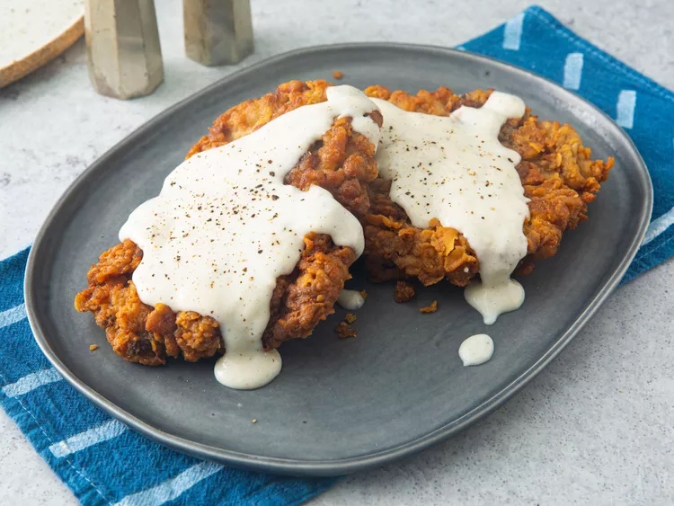

Chicken Fried Steak Recipe:

How to make the best Chicken Fried Steak:
Chicken Fried Steak is a Southern comfort food classic that marries the heartiness of steak with the crispy and seasoned coating reminiscent of fried chicken. The dish typically features tenderized and breaded cube steak, which is pan-fried to a golden brown and then smothered in a creamy country-style gravy.
The process begins by pounding the cube steak to tenderize it, then dredging it in a seasoned flour mixture, followed by a dip in beaten eggs, and finally a second coating of seasoned flour. The steak is then pan-fried until it achieves a crispy and flavorful exterior while maintaining a juicy and succulent interior. The crowning glory is the creamy white gravy, often made with pan drippings, flour, milk, and seasoned to perfection. The result is a comforting and indulgent dish that brings together the best of both worlds—crunchy, savory coating and a hearty, meaty center.
Follow along with the steps below to make your very own Chicken Fried Steak!
Ingredients:
- 4 cube steaks
- Salt and pepper to taste
- 1 cup all-purpose flour
- 2 large eggs, beaten
- 1 teaspoon garlic powder
- 1 teaspoon onion powder
- 1/2 teaspoon paprika
- Vegetable oil for frying
This is how to make it:
- Season the cube steaks with salt and pepper on both sides.
- In a shallow dish, combine the flour, garlic powder, onion powder, and paprika.
- Dredge each cube steak in the seasoned flour mixture, coating evenly.
- Dip the coated steak into the beaten eggs, ensuring full coverage.
- Place the steak back into the seasoned flour mixture for a second coating.
- Heat vegetable oil in a skillet over medium-high heat.
- Fry each cube steak for 3-4 minutes on each side or until golden brown and cooked through.
- Remove the steaks from the skillet and place them on a paper towel-lined plate to drain excess oil.
- In the same skillet, make the white gravy by combining pan drippings, flour, and milk. Cook until thickened, and season with salt and pepper.
- Serve the Chicken Fried Steak with the creamy gravy poured over the top.
Back